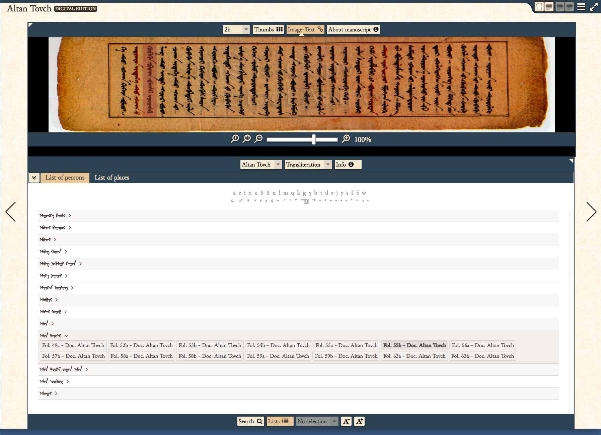

In this poster, we introduce a digital edition of the Altan Tobchi, a Mongolian historical manuscript written in traditional Mongolian script. The Text Encoding Initiative (TEI) guidelines were adopted to encode the named entities. A web prototype was developed for digital humanities scholarship for utilizing digital representations of ancient Mongolian historical manuscripts as scholarly tools. The proposed prototype has the capability to display and search TEI encoded traditional Mongolian text and its transliteration in Latin letters along with the highlighted named entities and the scanned images of the source manuscript. This poster discusses how to develop a digital edition of Mongolian historical documents.
Mongolian historical documents have been written in numerous scripts, i.e., the traditional Mongolian script, Square or Phags-pa script, Todo or Clear script, Soyombo script and Horizontal square script (Shagdarsuren, 2011). Among them, the traditional Mongolian script is the most popular and longest-surviving script for over 800 years. This research focuses on the traditional Mongolian script.
In 1946, Mongolia has made language reforms to eliminate a difference between written and spoken Mongolian language, and the Cyrillic script was adapted to Mongolian. The spelling of modern Mongolian was based on the pronunciations in the Khalkha dialect, the largest Mongol ethnic group (Sečenbagatur et al., 2005; Svatesson et al., 2005). Such a radical change separated the Mongolian people from their historical archives written in traditional Mongolian script. Reading traditional Mongolian documents by using literacy in modern Mongolian is not a simple task. Thus, a digital text representation that explains a given manuscript in a modern Mongolian is helpful for users who want to read, search and browse ancient Mongolian manuscripts.
To the best of our knowledge, there are a small number of digital texts of ancient Mongolian manuscripts. A few ancient Mongolian manuscripts including (1) ‘Qad-un ündüsün-ü quri-yangγui altan tobči neretü sudur’ (The Golden Summary: Short history of the Origins of the Khans) a.k.a. “Little” Altan Tobchi and (2) the ‘Asaraγči neretü-yin teüke’ (The Story of Asragch) have been converted to digital texts and made publicly available (Batjargal et al., 2012).
Batjargal et al. have developed the traditional Mongolian script digital library (TMSDL) (Batjargal et al., 2012), which can be used to access and retrieve historical manuscripts written in traditional Mongolian script using a query in modern Mongolian (Cyrillic). Moreover, Batjargal et al. also proposed a named entity extraction method (Batjargal et al., 2016), which extracts proper nouns from digitized text of ancient Mongolian documents using Support Vector Machine with 0.6993, 0.5679 and 0.6268 of precision, recall and F-measure respectively. These researches have motivated us to create a digital edition that reflects ancient Mongolian historical manuscripts.
We utilized Edition Visualization Technology (EVT) for creating a digital edition of Mongolian manuscripts, which is encoded according to the TEI XML schemas and guidelines (Del Turco et al., 2014). As shown in Figure 1 and Figure 2, all the personal names and place names (Figure 3) in the Altan Tobchi are highlighted by using the results of a named entity extraction method (Batjargal et al., 2016) and the named entities’ indices obtained from the “Qad-un ündüsün quriyangγui altan tobči –Textological Study” (Choimaa, 2002). We made the following customizations in EVT to make it suitable for Mongolian manuscripts in traditional Mongolian script.
Figure 1. Image-to-text link and personal names’ highlights
The proposed prototype can present scanned image-based editions with two edition levels: (1) diplomatic interpretative and (2) transliteration. Transliteration is helpful for those who are not familiar with a script of a certain language but understands that language. Transliteration in Latin letters of Mongolian historical documents is popular among scholars.
There is a limited recommendation to encode transliterations in TEI. Soualah and Hassoun (Soualah & Hassoun, 2012) proposed to implement transliteration by using a specific model, which uses the <ref> element with the @xml:lang, @target, and @type attributes. However, we consider transliteration as a separate edition and use it as parallel-text editions as shown in Figure 2.
A unique feature of traditional Mongolian script is displaying vertically, from top to bottom, in columns advancing from left to right. Due to poor support for traditional Mongolian script at the EVT, we customized it to display the scanned images at the top and the corresponding text in traditional Mongolian script below with the direction top to bottom and left to right (Figure 1). We also set to display text in traditional Mongolian script on the left, and the corresponding transliteration in Latin letters on the right that can be used to compare them.
Additionally, we added a simple virtual keyboard composed of 22 traditional Mongolian letters and their corresponding Latin letters to help users to input a Mongolian keyword to benefit free-text search and keyword highlighting (Figure 4).
Figure 2. Parallel-text editions with transliteration
Figure 3. List of personal names in traditional Mongolian script
Figure 4. A simple virtual keyboard in parallel-text editions with transliteration
In this poster, we discussed our development of creating a digital edition (http://www.dl.is.ritsumei.ac.jp/AltanTovch/) of Mongolian historical manuscripts of the 13-16th century. The proposed method could be applied to other documents in Todo, Manchu, and Sibe, which are the derivative scripts of traditional Mongolian. We will further improve the proposed prototype by adding features to support critical editions.
We believe the proposed digital edition will enable users to search and browse ancient Mongolian manuscript with the highlights of historical figures and ancient place names.